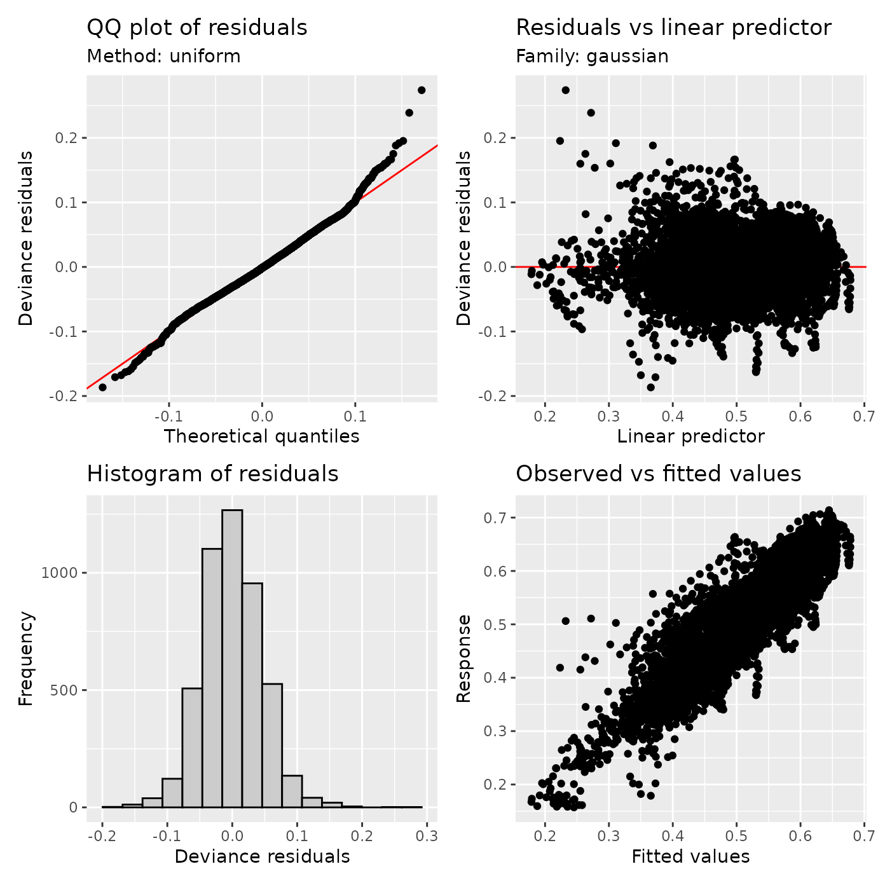
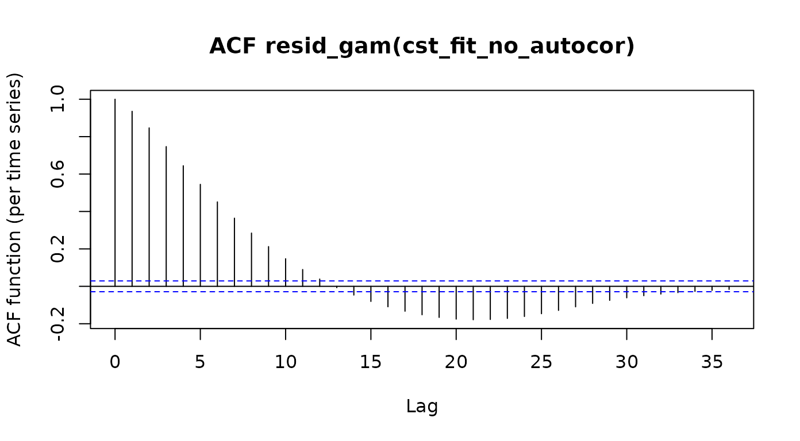
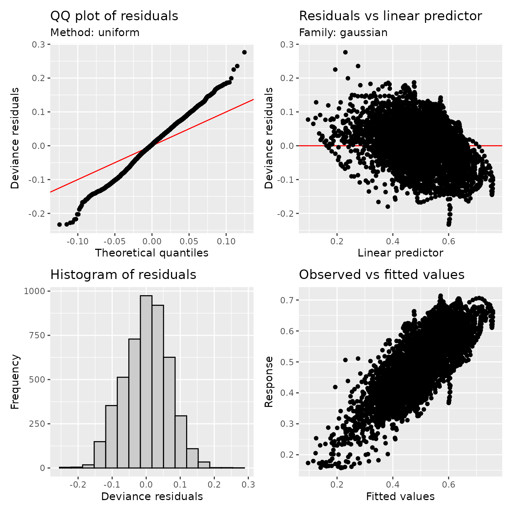
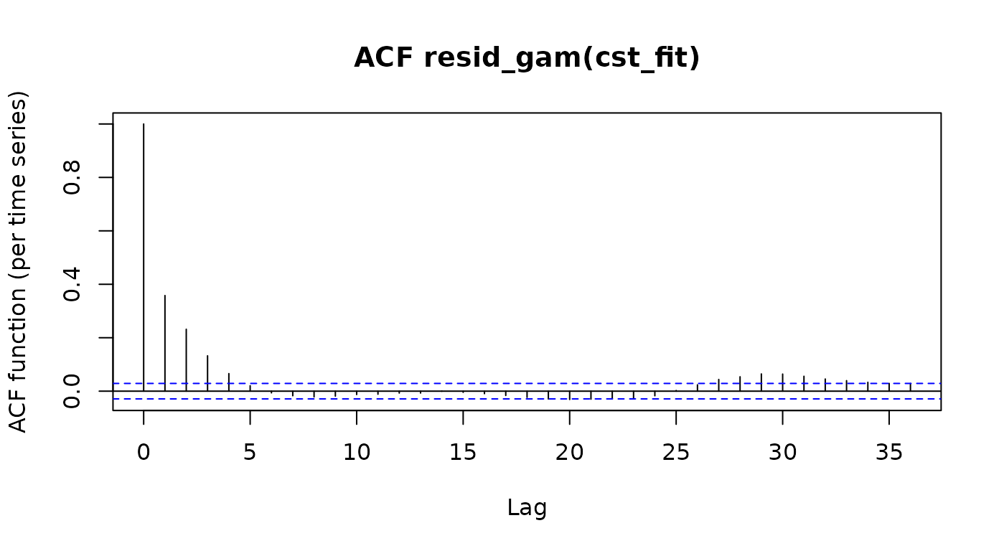

Including Autocorrelation Effects in GAMs
Source:vignettes/tractable-autocorrelations.Rmd
tractable-autocorrelations.RmdThis vignette demonstrates the use of an AR1 model within the GAM to
account for the spatial autocorrelation of the errors of the model. The
ideas that we use closely follow the work of Van Rij and colleagues
(Van Rij et al. 2019). While their work
used data that is different in many respects from our data (time-series
of eye pupil size in psycholingustic experiments), there are also some
similarities to the tract profile data that we are analyzing in
tractable. For example, the signals tend to change slowly
over time in their analysis, and tend to change rather slowly in space
in our analysis. In both cases, this means that the models fail to
capture some characteristics of the data, and that some inferences from
the GAM models tend to be anti-conservative, unless a mitigation
strategy and careful model checking are implemented. In particular, in
both cases, the residuals of the model may exhibit substantial
auto-correlation. They may also end up being centered not on zero. It is
always worth checking the underlying assumption of normally-distributed
residuals by plotting a so-called QQ plot. Finally, we can use formal
model comparison methods to adjudicate between alternative models.
As an example of this approach, we will use data from the Sarica
dataset (Sarica et al. 2017) to
demonstrate how to include an autocorrelation term in the GAM, and its
impact on model statistics. We start by loading the
tractable library, as well as the itsadug
and gratia
libraries, which both provide functionality to assess GAMs fit by
mgcv (our workhorse for GAM fitting).
#> Loading required package: mgcv
#> Loading required package: nlme
#> This is mgcv 1.9-1. For overview type 'help("mgcv-package")'.
#> Loading required package: plotfunctions
#> Loaded package itsadug 2.4 (see 'help("itsadug")' ).
#>
#> Attaching package: 'gratia'
#> The following object is masked from 'package:itsadug':
#>
#> dispersionNext, we will use a function that is included in
tractable to read this dataset directly into memory.
Importantly, both the group (“ALS” or “CTRL”) and the subject identifier (“subjectID”) need to be factors for subsequent analysis to work properly.
df_sarica <- read_afq_sarica(na_omit = TRUE)
df_sarica
#> # A tibble: 93,377 × 8
#> subjectID tractID nodeID fa md age group gender
#> <fct> <chr> <dbl> <dbl> <dbl> <dbl> <fct> <fct>
#> 1 subject_000 Left Thalamic Radiation 0 0.174 0.965 54 ALS F
#> 2 subject_000 Left Thalamic Radiation 1 0.227 0.912 54 ALS F
#> 3 subject_000 Left Thalamic Radiation 2 0.282 0.874 54 ALS F
#> 4 subject_000 Left Thalamic Radiation 3 0.318 0.851 54 ALS F
#> 5 subject_000 Left Thalamic Radiation 4 0.341 0.830 54 ALS F
#> 6 subject_000 Left Thalamic Radiation 5 0.353 0.812 54 ALS F
#> 7 subject_000 Left Thalamic Radiation 6 0.357 0.802 54 ALS F
#> 8 subject_000 Left Thalamic Radiation 7 0.357 0.795 54 ALS F
#> 9 subject_000 Left Thalamic Radiation 8 0.359 0.790 54 ALS F
#> 10 subject_000 Left Thalamic Radiation 9 0.371 0.784 54 ALS F
#> # ℹ 93,367 more rowsWe will first fit a GAM model that does not account for
autocorrelation structure in the residuals using the
tractable_single_tract function. This model will use
“group” and “age” to account for the measured FA, while smoothing over
the tract nodes. We will also use the automated procedure implemented in
tractable_single_tract to determine the ideal value for
k, a parameter used to determine the number of spline
functions. The default behavior for tractable_single_tract
is to include an AR1 model to account for autocorrelations, as we will
see below. But for now, to avoid this, we first set the parameter
autocor to FALSE.
cst_fit_no_autocor <- tractable_single_tract(
df = df_sarica,
tract = "Right Corticospinal",
target = "fa",
regressors = c("age", "group"),
node_group = "group",
node_k = 16,
autocor = FALSE
)
cst_no_autocor_summary <- summary(cst_fit_no_autocor)
cst_no_autocor_summary
#>
#> Family: gaussian
#> Link function: identity
#>
#> Formula:
#> fa ~ age + group + s(nodeID, by = group, bs = "fs", k = 16) +
#> s(subjectID, bs = "re")
#>
#> Parametric coefficients:
#> Estimate Std. Error t value Pr(>|t|)
#> (Intercept) 0.455764 0.019605 23.25 < 2e-16 ***
#> age 0.000335 0.000317 1.06 0.29
#> groupCTRL 0.034332 0.005405 6.35 2.3e-10 ***
#> ---
#> Signif. codes: 0 '***' 0.001 '**' 0.01 '*' 0.05 '.' 0.1 ' ' 1
#>
#> Approximate significance of smooth terms:
#> edf Ref.df F p-value
#> s(nodeID):groupALS 14.6 15 538.0 <2e-16 ***
#> s(nodeID):groupCTRL 14.5 15 592.9 <2e-16 ***
#> s(subjectID) 42.2 45 15.1 <2e-16 ***
#> ---
#> Signif. codes: 0 '***' 0.001 '**' 0.01 '*' 0.05 '.' 0.1 ' ' 1
#>
#> R-sq.(adj) = 0.794 Deviance explained = 79.7%
#> fREML = -7670.9 Scale est. = 0.0021381 n = 4734Examining the summary of the resulting GAM fit object shows us that
the k = 16 is sufficiently large to describe the spatial
variation of tract profile data. In addition, we see that there is a
statistically significant effect of group (with a p-value of
2.3229^{-10}) and no statistically significant effect of age (p =
0.2904).
In this model, no steps were taken to account for autocorrelated
residuals. We will use a few model diagnostics to evaluate the model.
First, we will use the gratia::appraise function, which
presents a few different visuals about the model:
appraise(cst_fit_no_autocor)
The top left plot is a QQ plot, it shows the residuals as a function of their quantile. In a perfect world (or at least a world in which model assumptions are valid), these points should fall along the equality line. This plot is not terrible, but there are some deviations. Another plot to look at is the plot of the residuals as a function of the prediction. Here, we look both at the overall location and shape of the point cloud, as well as for any signs of clear structure. In this case, we see some signs of trouble: the whole cloud is shifted away from zero, and there are what appear as trails of points, suggesting that some points form patterns. The first of these issues is also apparent in the bottom left, where residuals are not zero centerd in the histogram of model residuals.
Another diagnostic plot that is going to be crucial as a diagnostic
is the plot of the autocorrelation function of the residuals. A plot of
this sort is provided by the itsadug library:
acf_resid(cst_fit_no_autocor)
The dashed blue lines indicate the 95% confidence interval for the auto-correlation function of white noise. Here, we see that the auto-correlation at many of the lags (and particularly in the immediate neighbor, lag-1) is substantially larger than would be expected for a function with no autocorrelations. These autocorrelations pose a danger to inference not only because of mis-specification of the model, but also because we are going to under-estimate the standard error of the model in this setting and this will result in false positives (this is what Van Rij et al. elegantly refer to as “anti-conservative” models)
To account for potential spatial autocorrelation of FA values along the length of the tract profile, we can incorporate an AR1 model into our GAM. Briefly, the AR1 model is a linear model that estimates and accounts for the amount of influence of the model residual FA value of each node on the residual FA value of their neighbor node. This is somewhat akin to “pre-whitening” that fMRI researchers undertake, to account for temporal auto-correlations in the time-series measured with fMRI (see e.g. (Olszowy et al. 2019)).
The AR1 model takes a parameter
to estimate autocorrelation effects. We can pass our initial model into
the function itsadug::start_value_rho to automatically
determine the value of
.
rho_1 <- start_value_rho(cst_fit_no_autocor)
rho_1
#> [1] 0.9353By default, the tractable_single_tract function
empirically determines the value of
based on the data and uses it to incorporate the AR1 model of the
residuals into the GAM estimation.
cst_fit <- tractable_single_tract(
df = df_sarica,
tract = "Right Corticospinal",
target = "fa",
regressors = c("age", "group"),
node_group = "group",
node_k = 16
)
cst_summary <- summary(cst_fit)
cst_summary
#>
#> Family: gaussian
#> Link function: identity
#>
#> Formula:
#> fa ~ age + group + s(nodeID, by = group, bs = "fs", k = 16) +
#> s(subjectID, bs = "re")
#>
#> Parametric coefficients:
#> Estimate Std. Error t value Pr(>|t|)
#> (Intercept) 0.424914 0.057613 7.38 1.9e-13 ***
#> age 0.000810 0.000932 0.87 0.385
#> groupCTRL 0.035789 0.016239 2.20 0.028 *
#> ---
#> Signif. codes: 0 '***' 0.001 '**' 0.01 '*' 0.05 '.' 0.1 ' ' 1
#>
#> Approximate significance of smooth terms:
#> edf Ref.df F p-value
#> s(nodeID):groupALS 14.8 15 311.5 <2e-16 ***
#> s(nodeID):groupCTRL 14.8 15 358.4 <2e-16 ***
#> s(subjectID) 42.7 45 39.6 <2e-16 ***
#> ---
#> Signif. codes: 0 '***' 0.001 '**' 0.01 '*' 0.05 '.' 0.1 ' ' 1
#>
#> R-sq.(adj) = 0.577 Deviance explained = 58.3%
#> fREML = -14070 Scale est. = 0.0011312 n = 4734Examining the summary of the resulting GAM fit object shows us that the inclusion of the AR1 model changes the resulting statistics of our model. Although there is still a statistically significant effect of group (p = 0.0276), the value of the t-statistic on this term has changed from 6.3523 to 2.2039, suggesting that the model has become substantially more conservative.
Here as well, we can appraise the model with gratia:
appraise(cst_fit)
Notice some improvements to model characteristics: the residuals are more centered around zero and the QQ plot is somewhat improved. There is some residual structure in the scatter plot of residuals as a function of prediction. We can ask how bad this structure is in terms of the residual autocorrelation:
rho_2 <- acf_resid(cst_fit)["2"] # at lag 2
rho_2
#> 2
#> 0.2317This shows that the lag-1 autocorrelation has been reduced from approximately 0.9353 to approximately 0.2317.
Finally, formal model comparison can tell us which of these models
better fit the data. Using the itsadug library this can be
done using the Akaike Information Criterion as a comparator. In this
case, this also indicates that the model that accounts for
autocorrelations also has smaller residuals considering the number of
parameters, suggesting that it is overall a better model of the
data.
compareML(cst_fit_no_autocor, cst_fit)
#> cst_fit_no_autocor: fa ~ age + group + s(nodeID, by = group, bs = "fs", k = 16) +
#> s(subjectID, bs = "re")
#>
#> cst_fit: fa ~ age + group + s(nodeID, by = group, bs = "fs", k = 16) +
#> s(subjectID, bs = "re")
#>
#> Model cst_fit preferred: lower fREML score (6399.367), and equal df (0.000).
#> -----
#> Model Score Edf Difference Df
#> 1 cst_fit_no_autocor -7671 8
#> 2 cst_fit -14070 8 -6399.367 0.000
#>
#> AIC difference: 12816.00, model cst_fit has lower AIC.